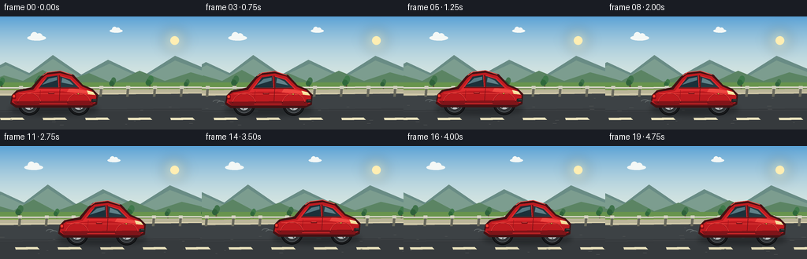
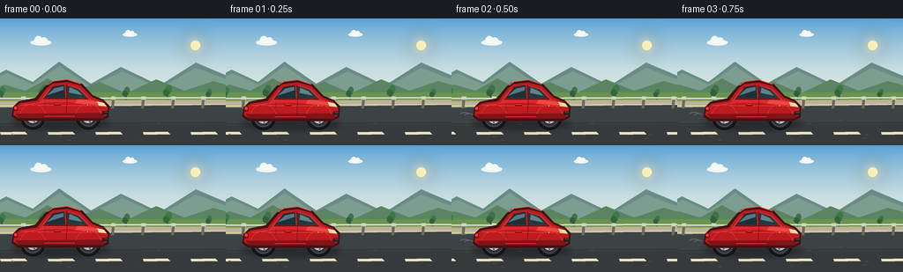

CODING AGENTS AS PIXEL WORLD MODELS
traex/GPT-5.6-Sol · instance_preservation_0028
点击播放 · 原生 RGB 像素
逐轮保存的候选
回放视频、检查图与代码变化。
每份候选均可单独播放。实际图片检查记录在下方工具轨迹中。
候选 01播放与检查图
点击播放 · 原生 RGB 像素


展开代码变化
--- 上一保存版本
+++ 本次保存版本
@@ -0,0 +1,227 @@
+from pathlib import Path
+import json, math
+import numpy as np
+from PIL import Image, ImageDraw, ImageFilter
+import artifact_io
+
+CASE_DIR = Path(__file__).resolve().parent
+spec = json.loads((CASE_DIR / "task_spec.json").read_text())
+W, H, N = spec["width"], spec["height"], spec["frames"]
+S = 4
+SW, SH = W*S, H*S
+
+def pts(seq):
+ return [(round(x*S), round(y*S)) for x,y in seq]
+
+def box(x0,y0,x1,y1):
+ return tuple(round(v*S) for v in (x0,y0,x1,y1))
+
+def line(draw, seq, fill, width=1, joint="curve"):
+ draw.line(pts(seq), fill=fill, width=max(1,round(width*S)), joint=joint)
+
+def ellipse(draw, b, fill, outline=None, width=1):
+ draw.ellipse(box(*b), fill=fill, outline=outline, width=max(1,round(width*S)))
+
+def polygon(draw, seq, fill):
+ draw.polygon(pts(seq), fill=fill)
+
+def rounded(draw, b, radius, fill, outline=None, width=1):
+ draw.rounded_rectangle(box(*b), radius=round(radius*S), fill=fill, outline=outline,
+ width=max(1,round(width*S)))
+
+def sky_base():
+ arr = np.empty((SH, SW, 3), dtype=np.uint8)
+ top = np.array([91,162,214], float)
+ bottom = np.array([220,233,226], float)
+ for yy in range(SH):
+ y = yy/S
+ q = min(1., y/99.)
+ q = q*(2-q)
+ arr[yy,:, :] = (top*(1-q)+bottom*q).astype(np.uint8)
+ return Image.fromarray(arr)
+
+def draw_cloud(d, x, y, scale, alpha=255):
+ c=(244,248,246,alpha) if alpha != 255 else (244,248,246)
+ # small layered flattened cloud
+ ellipse(d,(x-16*scale,y-4*scale,x+17*scale,y+5*scale),c)
+ ellipse(d,(x-10*scale,y-10*scale,x+3*scale,y+4*scale),c)
+ ellipse(d,(x-1*scale,y-8*scale,x+11*scale,y+5*scale),c)
+
+def draw_tree(d, x, base, scale, color=(53,100,63)):
+ # distant tree, trunk and three irregular crowns
+ rounded(d,(x-1.4*scale,base-15*scale,x+1.4*scale,base),.7*scale,(88,72,50))
+ ellipse(d,(x-7*scale,base-24*scale,x+6*scale,base-9*scale),color)
+ ellipse(d,(x-4*scale,base-29*scale,x+8*scale,base-13*scale),tuple(min(255,c+9) for c in color))
+ ellipse(d,(x-9*scale,base-20*scale,x+3*scale,base-7*scale),tuple(max(0,c-7) for c in color))
+
+def draw_car(im, cx, cy, frame):
+ d=ImageDraw.Draw(im)
+ # soft moving contact shadow
+ shadow=Image.new("RGBA", im.size, (0,0,0,0)); sd=ImageDraw.Draw(shadow)
+ ellipse(sd,(cx-56,cy+7,cx+57,cy+22),(8,10,12,90))
+ shadow=shadow.filter(ImageFilter.GaussianBlur(3*S))
+ im.paste(shadow,(0,0),shadow)
+ d=ImageDraw.Draw(im)
+
+ # wheels are tucked behind the fenders
+ wheel_centers=[cx-31,cx+32]
+ rotation=frame*1.43
+ for wx in wheel_centers:
+ ellipse(d,(wx-14,cy-6,wx+14,cy+22),(24,25,27), (10,12,14), 1.1)
+ ellipse(d,(wx-10.5,cy-2.5,wx+10.5,cy+18.5),(49,53,56),(91,96,99),.8)
+ ellipse(d,(wx-7.5,cy+.5,wx+7.5,cy+15.5),(184,189,190),(28,31,33),.7)
+ # rotating five-spoke alloy rim
+ for k in range(5):
+ a=rotation+k*2*math.pi/5
+ x2=wx+6.3*math.cos(a); y2=cy+8+6.3*math.sin(a)
+ line(d,[(wx,cy+8),(x2,y2)],(74,79,82),1.4)
+ line(d,[(wx,cy+8),(wx+4.5*math.cos(a),cy+8+4.5*math.sin(a))],(225,229,227),.65)
+ ellipse(d,(wx-2.2,cy+5.8,wx+2.2,cy+10.2),(43,45,47),(210,211,208),.5)
+
+ # dark underbody foundation / silhouette border
+ silhouette=[(cx-55,cy+7),(cx-53,cy-4),(cx-47,cy-10),(cx-28,cy-14),
+ (cx-17,cy-27),(cx-11,cy-32),(cx+8,cy-35),(cx+25,cy-30),
+ (cx+37,cy-17),(cx+49,cy-12),(cx+56,cy-5),(cx+55,cy+8),
+ (cx+46,cy+12),(cx-48,cy+12)]
+ polygon(d,silhouette,(67,18,20))
+ # primary body with smooth, low sports coupe profile
+ body=[(cx-53,cy+5),(cx-51,cy-4),(cx-45,cy-8),(cx-26,cy-11),
+ (cx-15,cy-25),(cx-9,cy-30),(cx+8,cy-32),(cx+23,cy-28),
+ (cx+36,cy-15),(cx+48,cy-10),(cx+54,cy-3),(cx+53,cy+6),
+ (cx+46,cy+9),(cx-47,cy+9)]
+ polygon(d,body,(190,27,32))
+ # brighter shoulder/hood plane
+ upper=[(cx-49,cy-5),(cx-24,cy-9),(cx-13,cy-23),(cx-7,cy-27),
+ (cx+8,cy-29),(cx+22,cy-25),(cx+34,cy-13),(cx+48,cy-8),
+ (cx+51,cy-4),(cx+28,cy-6),(cx+11,cy-9),(cx-12,cy-9)]
+ polygon(d,upper,(221,42,45))
+ # hood highlight is signature and remains constant
+ polygon(d,[(cx+20,cy-13),(cx+45,cy-9),(cx+49,cy-6),(cx+17,cy-8)],(239,71,65))
+ line(d,[(cx-44,cy-6),(cx+47,cy-5)],(249,82,72),.85)
+ # lower rocker shadow
+ polygon(d,[(cx-51,cy+4),(cx+52,cy+3),(cx+49,cy+9),(cx-47,cy+9)],(128,20,25))
+ line(d,[(cx-18,cy+7),(cx+17,cy+7)],(238,48,48),.8)
+
+ # glazed cabin, divided by a red B pillar
+ windshield=[(cx+8,cy-28),(cx+21,cy-24),(cx+31,cy-14),(cx+9,cy-14)]
+ sidewin=[(cx-8,cy-27),(cx+5,cy-29),(cx+6,cy-14),(cx-18,cy-14)]
+ polygon(d,sidewin,(28,48,57)); polygon(d,windshield,(35,57,65))
+ # blue sky reflection in glass
+ polygon(d,[(cx-6,cy-25),(cx+4,cy-27),(cx+4,cy-23),(cx-15,cy-17)],(84,119,129))
+ polygon(d,[(cx+11,cy-26),(cx+20,cy-22),(cx+25,cy-17),(cx+10,cy-20)],(96,130,137))
+ line(d,[(cx+7,cy-29),(cx+8,cy-13)],(114,20,23),2.0)
+ line(d,[(cx-19,cy-13),(cx+32,cy-13)],(100,17,20),1.3)
+ # roof gleam
+ line(d,[(cx-14,cy-29),(cx-8,cy-33),(cx+8,cy-35),(cx+23,cy-30)],(245,86,78),1.1)
+
+ # front and rear lamps and details
+ polygon(d,[(cx+42,cy-10),(cx+50,cy-8),(cx+53,cy-4),(cx+44,cy-5)],(247,224,154))
+ line(d,[(cx+44,cy-9),(cx+50,cy-7)],(255,249,209),.8)
+ rounded(d,(cx-52,cy-5,cx-48,cy+1),1,(139,10,20))
+ rounded(d,(cx-52,cy-4,cx-49,cy-1),.8,(250,63,47))
+ # grille at nose
+ rounded(d,(cx+48,cy+1,cx+55,cy+5),1,(36,35,35))
+ line(d,[(cx+50,cy+2),(cx+54,cy+2)],(110,110,108),.5)
+ # door seam and handle
+ line(d,[(cx+8,cy-12),(cx+7,cy+4)],(119,18,23),.7)
+ line(d,[(cx-17,cy-10),(cx-18,cy+4)],(145,21,25),.55)
+ rounded(d,(cx-7,cy-7,cx+1,cy-5.5),.7,(112,17,21))
+ line(d,[(cx-6,cy-7),(cx,cy-7)],(251,92,81),.45)
+ # tiny round badge
+ ellipse(d,(cx+30,cy-7,cx+32.6,cy-4.4),(232,196,68),(94,28,25),.4)
+
+ # re-establish front arcs of tires for crisp depth
+ for wx in wheel_centers:
+ # top body-colored fender lip and dark arch edge
+ arcbox=box(wx-15,cy-7,wx+15,cy+23)
+ d.arc(arcbox,190,350,fill=(74,18,22),width=round(1.1*S))
+ d.arc(arcbox,195,345,fill=(238,57,55),width=round(.65*S))
+
+
+def render(frame):
+ im=sky_base().convert("RGB")
+ d=ImageDraw.Draw(im)
+ # warm low sun with restrained glow
+ glow=Image.new("RGBA", im.size,(0,0,0,0)); gd=ImageDraw.Draw(glow)
+ ellipse(gd,(204,13,238,47),(255,226,146,26))
+ ellipse(gd,(211,20,231,40),(255,234,164,80))
+ glow=glow.filter(ImageFilter.GaussianBlur(7*S)); im.paste(glow,(0,0),glow)
+ d=ImageDraw.Draw(im)
+ ellipse(d,(216,25,227,36),(255,238,179))
+
+ # clouds drift slowly, preserving coherent weather
+ draw_cloud(d,46-frame*.35,27,0.72)
+ draw_cloud(d,147-frame*.25,18,0.50)
+
+ # layered distant mountains, slight parallax
+ shift=-frame*.6
+ polygon(d,[(-30+shift,78),(7+shift,58),(37+shift,72),(67+shift,49),(103+shift,74),
+ (137+shift,55),(181+shift,76),(222+shift,50),(286+shift,77),(286,97),(-30,97)],(105,140,133))
+ polygon(d,[(-30+shift,79),(8+shift,62),(37+shift,75),(67+shift,54),(102+shift,77),
+ (139+shift,60),(181+shift,79),(222+shift,56),(286+shift,80),(286,98),(-30,98)],(124,157,143))
+ # far haze ridge
+ shift2=-frame*1.05
+ polygon(d,[(-30,88),(5+shift2,75),(29+shift2,82),(54+shift2,68),(82+shift2,83),
+ (113+shift2,72),(143+shift2,85),(177+shift2,69),(209+shift2,82),
+ (242+shift2,71),(290,85),(290,101),(-30,101)],(91,132,99))
+ # field bands
+ polygon(d,[(-5,84),(W+5,84),(W+5,99),(-5,99)],(104,148,77))
+ polygon(d,[(-5,92),(W+5,91),(W+5,101),(-5,103)],(128,164,79))
+ # texture furrows moving left
+ for j in range(11):
+ x=((j*31-frame*4.0)%330)-36
+ line(d,[(x,92),(x+15,96)],(151,176,91),.55)
+
+ # roadside trees with parallax, kept behind vehicle
+ for j in range(8):
+ x=((j*47+15-frame*2.2)%376)-60
+ sc=0.42+0.08*((j*7)%3)
+ draw_tree(d,x,92,sc,(54,105+((j%2)*7),65))
+
+ # paved road and shoulder
+ polygon(d,[(-5,96),(W+5,94),(W+5,H+3),(-5,H+3)],(61,66,69))
+ polygon(d,[(-5,94),(W+5,92),(W+5,98),(-5,101)],(186,181,153))
+ line(d,[(-2,99),(W+2,97)],(233,222,185),1.0)
+ # asphalt soft horizontal bands
+ polygon(d,[(-5,119),(W+5,117),(W+5,145),(-5,145)],(54,58,61))
+ line(d,[(-5,121),(W+5,119)],(77,80,81),.6)
+
+ # guard rail: posts translate past the car, rail mostly continuous
+ rail_y=91
+ line(d,[(-5,rail_y),(W+5,rail_y-1)],(221,220,203),2.2)
+ line(d,[(-5,rail_y+1),(W+5,rail_y)],(93,99,91),.65)
+ for j in range(10):
+ x=((j*34-frame*6.3)%340)-42
+ polygon(d,[(x-1,90),(x+2,90),(x+1,102),(x-2,102)],(106,106,93))
+ rounded(d,(x-2,88.5,x+3,92),.5,(211,209,192))
+
+ # broken lane line moving rapidly left
+ offset=(frame*13.0)%54
+ for j in range(-1,7):
+ x=j*54-offset
+ polygon(d,[(x,129),(x+28,128.5),(x+31,131.5),(x+1,132)],(235,227,190))
+ # stable stochastic-looking road streaks derived analytically
+ for j in range(18):
+ x=((j*43 + (j*j*7)%29 - frame*10.1)%330)-38
+ y=104+((j*17)%35)
+ length=2+(j%4)*1.2
+ line(d,[(x,y),(x+length,y-.1)],(83,86,86),.45)
+
+ # vehicle advances right while landscape streams left
+ cx=68 + frame*(105/19)
+ cy=104 + 0.55*math.sin(frame*.78)
+ draw_car(im,cx,cy,frame)
+
+ # faint heat/exhaust wisps directly behind, never changing car silhouette
+ od=ImageDraw.Draw(im,"RGBA")
+ if frame>1:
+ for k in range(2):
+ ex=cx-57-k*5-(frame%4)*1.2
+ ey=cy+5-k*1.4
+ od.arc(box(ex-5,ey-2,ex+5,ey+3),180,335,fill=(207,215,211,65),width=max(1,S))
+
+ return np.asarray(im.resize((W,H),Image.Resampling.LANCZOS),dtype=np.uint8)
+
+frames=np.stack([render(i) for i in range(N)],axis=0)
+artifact_io.save(frames, CASE_DIR)
+print(f"saved {frames.shape} {frames.dtype} to {CASE_DIR}")
可观测工具轨迹
实际执行的命令与返回图片。
命令 1exit 0
/bin/bash -lc "cat prompt.txt && printf '\\n--- RULES ---\\n' && cat GENERATION_RULES.md && printf '\\n--- SPEC ---\\n' && cat task_spec.json"
命令 2exit 0
/bin/bash -lc "find . -maxdepth 2 -type f -printf '%p %s bytes\\n' | sort && printf '\\nTOOLS\\n' && command -v ffmpeg || true && command -v python3 || true && python3 - <<'PY'
try:
import cv2; print('cv2', cv2.__version__)
except Exception as e: print('no cv2',e)
try:
from PIL import Image; print('PIL ok')
except Exception as e: print('no PIL',e)
PY"命令 3exit 0
/bin/bash -lc 'cat artifact_io.py'
命令 4exit 0
/bin/bash -lc "cat > generate.py <<'PY'
from pathlib import Path
import json, math
import numpy as np
from PIL import Image, ImageDraw, ImageFilter
import artifact_io
CASE_DIR = Path(__file__).resolve().parent
spec = json.loads((CASE_DIR / \"task_spec.json\").read_text())
W, H, N = spec[\"width\"], spec[\"height\"], spec[\"frames\"]
S = 4
SW, SH = W*S, H*S
def pts(seq):
return [(round(x*S), round(y*S)) for x,y in seq]
def box(x0,y0,x1,y1):
return tuple(round(v*S) for v in (x0,y0,x1,y1))
def line(draw, seq, fill, width=1, joint=\"curve\"):
draw.line(pts(seq), fill=fill, width=max(1,round(width*S)), joint=joint)
def ellipse(draw, b, fill, outline=None, width=1):
draw.ellipse(box(*b), fill=fill, outline=outline, width=max(1,round(width*S)))
def polygon(draw, seq, fill):
draw.polygon(pts(seq), fill=fill)
def rounded(draw, b, radius, fill, outline=None, width=1):
draw.rounded_rectangle(box(*b), radius=round(radius*S), fill=fill, outline=outline,
width=max(1,round(width*S)))
def sky_base():
arr = np.empty((SH, SW, 3), dtype=np.uint8)
top = np.array([91,162,214], float)
bottom = np.array([220,233,226], float)
for yy in range(SH):
y = yy/S
q = min(1., y/99.)
q = q*(2-q)
arr[yy,:, :] = (top*(1-q)+bottom*q).astype(np.uint8)
return Image.fromarray(arr)
def draw_cloud(d, x, y, scale, alpha=255):
c=(244,248,246,alpha) if alpha "'!= 255 else (244,248,246)
# small layered flattened cloud
ellipse(d,(x-16*scale,y-4*scale,x+17*scale,y+5*scale),c)
ellipse(d,(x-10*scale,y-10*scale,x+3*scale,y+4*scale),c)
ellipse(d,(x-1*scale,y-8*scale,x+11*scale,y+5*scale),c)
def draw_tree(d, x, base, scale, color=(53,100,63)):
# distant tree, trunk and three irregular crowns
rounded(d,(x-1.4*scale,base-15*scale,x+1.4*scale,base),.7*scale,(88,72,50))
ellipse(d,(x-7*scale,base-24*scale,x+6*scale,base-9*scale),color)
ellipse(d,(x-4*scale,base-29*scale,x+8*scale,base-13*scale),tuple(min(255,c+9) for c in color))
ellipse(d,(x-9*scale,base-20*scale,x+3*scale,base-7*scale),tuple(max(0,c-7) for c in color))
def draw_car(im, cx, cy, frame):
d=ImageDraw.Draw(im)
# soft moving contact shadow
shadow=Image.new("RGBA", im.size, (0,0,0,0)); sd=ImageDraw.Draw(shadow)
ellipse(sd,(cx-56,cy+7,cx+57,cy+22),(8,10,12,90))
shadow=shadow.filter(ImageFilter.GaussianBlur(3*S))
im.paste(shadow,(0,0),shadow)
d=ImageDraw.Draw(im)
# wheels are tucked behind the fenders
wheel_centers=[cx-31,cx+32]
rotation=frame*1.43
for wx in wheel_centers:
ellipse(d,(wx-14,cy-6,wx+14,cy+22),(24,25,27), (10,12,14), 1.1)
ellipse(d,(wx-10.5,cy-2.5,wx+10.5,cy+18.5),(49,53,56),(91,96,99),.8)
ellipse(d,(wx-7.5,cy+.5,wx+7.5,cy+15.5),(184,189,190),(28,31,33),.7)
# rotating five-spoke alloy rim
for k in range(5):
a=rotation+k*2*math.pi/5
x2=wx+6.3*math.cos(a); y2=cy+8+6.3*math.sin(a)
line(d,[(wx,cy+8),(x2,y2)],(74,79,82),1.4)
line(d,[(wx,cy+8),(wx+4.5*math.cos(a),cy+8+4.5*math.sin(a))],(225,229,227),.65)
ellipse(d,(wx-2.2,cy+5.8,wx+2.2,cy+10.2),(43,45,47),(210,211,208),.5)
# dark underbody foundation / silhouette border
silhouette=[(cx-55,cy+7),(cx-53,cy-4),(cx-47,cy-10),(cx-28,cy-14),
(cx-17,cy-27),(cx-11,cy-32),(cx+8,cy-35),(cx+25,cy-30),
(cx+37,cy-17),(cx+49,cy-12),(cx+56,cy-5),(cx+55,cy+8),
(cx+46,cy+12),(cx-48,cy+12)]
polygon(d,silhouette,(67,18,20))
# primary body with smooth, low sports coupe profile
body=[(cx-53,cy+5),(cx-51,cy-4),(cx-45,cy-8),(cx-26,cy-11),
(cx-15,cy-25),(cx-9,cy-30),(cx+8,cy-32),(cx+23,cy-28),
(cx+36,cy-15),(cx+48,cy-10),(cx+54,cy-3),(cx+53,cy+6),
(cx+46,cy+9),(cx-47,cy+9)]
polygon(d,body,(190,27,32))
# brighter shoulder/hood plane
upper=[(cx-49,cy-5),(cx-24,cy-9),(cx-13,cy-23),(cx-7,cy-27),
(cx+8,cy-29),(cx+22,cy-25),(cx+34,cy-13),(cx+48,cy-8),
(cx+51,cy-4),(cx+28,cy-6),(cx+11,cy-9),(cx-12,cy-9)]
polygon(d,upper,(221,42,45))
# hood highlight is signature and remains constant
polygon(d,[(cx+20,cy-13),(cx+45,cy-9),(cx+49,cy-6),(cx+17,cy-8)],(239,71,65))
line(d,[(cx-44,cy-6),(cx+47,cy-5)],(249,82,72),.85)
# lower rocker shadow
polygon(d,[(cx-51,cy+4),(cx+52,cy+3),(cx+49,cy+9),(cx-47,cy+9)],(128,20,25))
line(d,[(cx-18,cy+7),(cx+17,cy+7)],(238,48,48),.8)
# glazed cabin, divided by a red B pillar
windshield=[(cx+8,cy-28),(cx+21,cy-24),(cx+31,cy-14),(cx+9,cy-14)]
sidewin=[(cx-8,cy-27),(cx+5,cy-29),(cx+6,cy-14),(cx-18,cy-14)]
polygon(d,sidewin,(28,48,57)); polygon(d,windshield,(35,57,65))
# blue sky reflection in glass
polygon(d,[(cx-6,cy-25),(cx+4,cy-27),(cx+4,cy-23),(cx-15,cy-17)],(84,119,129))
polygon(d,[(cx+11,cy-26),(cx+20,cy-22),(cx+25,cy-17),(cx+10,cy-20)],(96,130,137))
line(d,[(cx+7,cy-29),(cx+8,cy-13)],(114,20,23),2.0)
line(d,[(cx-19,cy-13),(cx+32,cy-13)],(100,17,20),1.3)
# roof gleam
line(d,[(cx-14,cy-29),(cx-8,cy-33),(cx+8,cy-35),(cx+23,cy-30)],(245,86,78),1.1)
# front and rear lamps and details
polygon(d,[(cx+42,cy-10),(cx+50,cy-8),(cx+53,cy-4),(cx+44,cy-5)],(247,224,154))
line(d,[(cx+44,cy-9),(cx+50,cy-7)],(255,249,209),.8)
rounded(d,(cx-52,cy-5,cx-48,cy+1),1,(139,10,20))
rounded(d,(cx-52,cy-4,cx-49,cy-1),.8,(250,63,47))
# grille at nose
rounded(d,(cx+48,cy+1,cx+55,cy+5),1,(36,35,35))
line(d,[(cx+50,cy+2),(cx+54,cy+2)],(110,110,108),.5)
# door seam and handle
line(d,[(cx+8,cy-12),(cx+7,cy+4)],(119,18,23),.7)
line(d,[(cx-17,cy-10),(cx-18,cy+4)],(145,21,25),.55)
rounded(d,(cx-7,cy-7,cx+1,cy-5.5),.7,(112,17,21))
line(d,[(cx-6,cy-7),(cx,cy-7)],(251,92,81),.45)
# tiny round badge
ellipse(d,(cx+30,cy-7,cx+32.6,cy-4.4),(232,196,68),(94,28,25),.4)
# re-establish front arcs of tires for crisp depth
for wx in wheel_centers:
# top body-colored fender lip and dark arch edge
arcbox=box(wx-15,cy-7,wx+15,cy+23)
d.arc(arcbox,190,350,fill=(74,18,22),width=round(1.1*S))
d.arc(arcbox,195,345,fill=(238,57,55),width=round(.65*S))
def render(frame):
im=sky_base().convert("RGB")
d=ImageDraw.Draw(im)
# warm low sun with restrained glow
glow=Image.new("RGBA", im.size,(0,0,0,0)); gd=ImageDraw.Draw(glow)
ellipse(gd,(204,13,238,47),(255,226,146,26))
ellipse(gd,(211,20,231,40),(255,234,164,80))
glow=glow.filter(ImageFilter.GaussianBlur(7*S)); im.paste(glow,(0,0),glow)
d=ImageDraw.Draw(im)
ellipse(d,(216,25,227,36),(255,238,179))
# clouds drift slowly, preserving coherent weather
draw_cloud(d,46-frame*.35,27,0.72)
draw_cloud(d,147-frame*.25,18,0.50)
# layered distant mountains, slight parallax
shift=-frame*.6
polygon(d,[(-30+shift,78),(7+shift,58),(37+shift,72),(67+shift,49),(103+shift,74),
(137+shift,55),(181+shift,76),(222+shift,50),(286+shift,77),(286,97),(-30,97)],(105,140,133))
polygon(d,[(-30+shift,79),(8+shift,62),(37+shift,75),(67+shift,54),(102+shift,77),
(139+shift,60),(181+shift,79),(222+shift,56),(286+shift,80),(286,98),(-30,98)],(124,157,143))
# far haze ridge
shift2=-frame*1.05
polygon(d,[(-30,88),(5+shift2,75),(29+shift2,82),(54+shift2,68),(82+shift2,83),
(113+shift2,72),(143+shift2,85),(177+shift2,69),(209+shift2,82),
(242+shift2,71),(290,85),(290,101),(-30,101)],(91,132,99))
# field bands
polygon(d,[(-5,84),(W+5,84),(W+5,99),(-5,99)],(104,148,77))
polygon(d,[(-5,92),(W+5,91),(W+5,101),(-5,103)],(128,164,79))
# texture furrows moving left
for j in range(11):
x=((j*31-frame*4.0)%330)-36
line(d,[(x,92),(x+15,96)],(151,176,91),.55)
# roadside trees with parallax, kept behind vehicle
for j in range(8):
x=((j*47+15-frame*2.2)%376)-60
sc=0.42+0.08*((j*7)%3)
draw_tree(d,x,92,sc,(54,105+((j%2)*7),65))
# paved road and shoulder
polygon(d,[(-5,96),(W+5,94),(W+5,H+3),(-5,H+3)],(61,66,69))
polygon(d,[(-5,94),(W+5,92),(W+5,98),(-5,101)],(186,181,153))
line(d,[(-2,99),(W+2,97)],(233,222,185),1.0)
# asphalt soft horizontal bands
polygon(d,[(-5,119),(W+5,117),(W+5,145),(-5,145)],(54,58,61))
line(d,[(-5,121),(W+5,119)],(77,80,81),.6)
# guard rail: posts translate past the car, rail mostly continuous
rail_y=91
line(d,[(-5,rail_y),(W+5,rail_y-1)],(221,220,203),2.2)
line(d,[(-5,rail_y+1),(W+5,rail_y)],(93,99,91),.65)
for j in range(10):
x=((j*34-frame*6.3)%340)-42
polygon(d,[(x-1,90),(x+2,90),(x+1,102),(x-2,102)],(106,106,93))
rounded(d,(x-2,88.5,x+3,92),.5,(211,209,192))
# broken lane line moving rapidly left
offset=(frame*13.0)%54
for j in range(-1,7):
x=j*54-offset
polygon(d,[(x,129),(x+28,128.5),(x+31,131.5),(x+1,132)],(235,227,190))
# stable stochastic-looking road streaks derived analytically
for j in range(18):
x=((j*43 + (j*j*7)%29 - frame*10.1)%330)-38
y=104+((j*17)%35)
length=2+(j%4)*1.2
line(d,[(x,y),(x+length,y-.1)],(83,86,86),.45)
# vehicle advances right while landscape streams left
cx=68 + frame*(105/19)
cy=104 + 0.55*math.sin(frame*.78)
draw_car(im,cx,cy,frame)
# faint heat/exhaust wisps directly behind, never changing car silhouette
od=ImageDraw.Draw(im,"RGBA")
if frame>1:
for k in range(2):
ex=cx-57-k*5-(frame%4)*1.2
ey=cy+5-k*1.4
od.arc(box(ex-5,ey-2,ex+5,ey+3),180,335,fill=(207,215,211,65),width=max(1,S))
return np.asarray(im.resize((W,H),Image.Resampling.LANCZOS),dtype=np.uint8)
frames=np.stack([render(i) for i in range(N)],axis=0)
artifact_io.save(frames, CASE_DIR)
print(f"saved {frames.shape} {frames.dtype} to {CASE_DIR}")
PY
python3 generate.py
ls -lh pixels.npz inspection.png index.html frames/00.png frames/19.png'命令 5exit 0
/bin/bash -lc "python3 - <<'PY'
from pathlib import Path
import numpy as np
from PIL import Image
files=sorted(Path('frames').glob('*.png'))
assert len(files)==20
arr=np.stack([np.array(Image.open(p).convert('RGB')) for p in files])
assert arr.shape==(20,144,256,3) and arr.dtype==np.uint8
# Red body centroid should progress smoothly and remain present.
centers=[]
for f in arr:
m=(f[:,:,0]>135)&(f[:,:,0]>f[:,:,1]*1.55)&(f[:,:,0]>f[:,:,2]*1.35)
ys,xs=np.nonzero(m)
centers.append((xs.mean(),ys.mean(),len(xs)))
assert all(centers[i+1][0]>centers[i][0] for i in range(19)), centers
assert all(np.any(arr[i]"'!=arr[i-1]) for i in range(1,20))
print('"'validated',arr.shape,arr.dtype)
print('red-car centroids first/last:', centers[0], centers[-1])
print('mean adjacent changed pixels:',np.mean([np.any(arr[i]"'!=arr[i-1],axis=2).sum() for i in range(1,20)]))
PY'保存候选 1 份；完成命令 5 次；可验证图片返回 0 张。原始 API 响应与完整日志保留在本地。